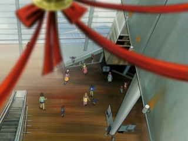
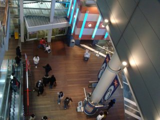
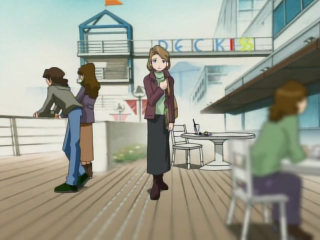
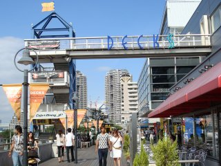

DECKS Tokyo Beach
 
.::Joypolis/West entrance of DECKS Tokyo Beach, from the third floor::.
The DECKS Tokyo Beach building was one of the first shopping/entertainment centres built during the revival of the Tokyo Bay area in 1996. Six stories high and containing the popular Odaiba Little Hong Kong, the Odaiba Icchoume Shoutengai and Sega Joypolis, it offers one of the best sitting views of the Rainbow Bridge. The name of the complex comes from the boardwalk on the north side of the building, overlooking Odaiba-kaihinkōen. It is next door to Aqua City and connected by the boardwalk.
 
.::The cafe on the boardwalk where Oikawa was eating cake on Christmas Eve::.
On weekends and holidays, musicians and street performers can be found giving shows in the building, primarily on the boardwalk. The closest Yurikamome station is Odaiba-kaihinkōen, but Daiba station near Aqua City next door is also close.
Though DECKS is not featured onscreen in Digimon Adventure, it does appear in 02, in episode 38, Holy Night Digimon Ōshūgō. Natsuko meets Oikawa on the complex's boardwalk.
{kind=link}
{kind=link}
{kind=link}
{kind=link}
{kind=link}
{kind=link}